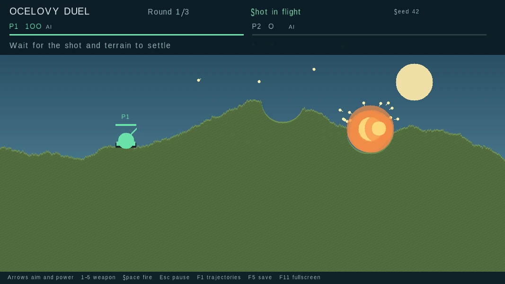

What I built in C++.
Search, simulation, mathematics, and design decisions I can explain line by line.
Chess
A desktop chess project with move validation and my own multithreaded computer opponent.
Chess
A desktop chess project with move validation and my own multithreaded computer opponent.

Rules and game state
The board validates legal moves, check and checkmate, castling through safe squares, en passant, four promotion choices, threefold repetition, and the fifty-move draw. The interface also supports undo, reset, and fullscreen play.
How the computer searches
The AI uses a four-second iterative-deepening budget. Root moves are distributed across available CPU threads, then searched with negamax, alpha-beta pruning, quiescence search, move ordering, and a 131,072-entry transposition table keyed by incrementally updated Zobrist hashes. A small opening book covers six lines.
Position evaluation
The evaluation combines material and piece-square tables with pawn structure, passed pawns, king safety, and a bishop-pair bonus. King placement blends middlegame and endgame tables according to the remaining material; a separate heuristic scores nearby opposing pieces around the queen.
Komplex
An interactive 800 × 600 Mandelbrot renderer that splits every frame across eight POSIX threads.
Komplex
An interactive 800 × 600 Mandelbrot renderer that splits every frame across eight POSIX threads.

Render loop
Each frame divides the 600 rows into eight fixed 75-row jobs. The main thread creates and joins eight pthread workers, while each worker writes its band directly into the SDL surface.
Fractal calculation
Every pixel maps a double-precision coordinate to the complex plane and iterates z² + c until the squared magnitude exceeds 16 or the 200-iteration limit is reached. Arrow keys pan; P and O change zoom by a factor of 1.3.
Iron Duel
A local turn-based artillery game with procedural terrain, five projectile types, and per-pixel destruction.
Iron Duel
A local turn-based artillery game with procedural terrain, five projectile types, and per-pixel destruction.

Terrain model
Three recursive generators create hills, mountains, or desert profiles inside a 1,067 × 600 occupancy grid. Explosions carve circular regions out of the grid, then unsupported pixels fall until the landscape settles.
Projectile simulation
Projectiles integrate horizontal and vertical velocity with gravity. Five weapon classes add rockets, bouncing shots, cluster bombs, and chained projectiles, while the game loop handles tank health, turn order, rounds, and an economy between rounds.